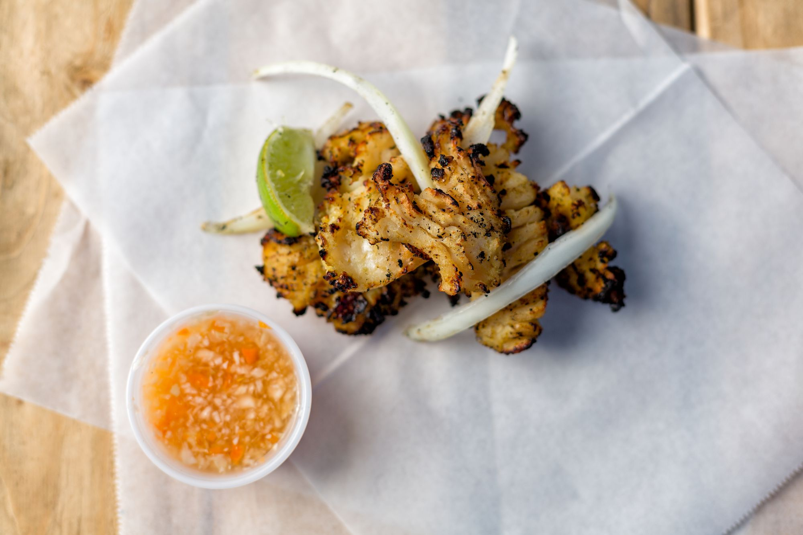

Fritay

Fritay refers to fried foods.
Certain fritay, like the seasoned grated malanga fritters called akra,
can trace their lineage directly back to West Africa, where similar preparations exist with the same name. Perhaps the simplest fritay is patat, slices of deep fried white sweet potatoes typically served as a snack or side dish. Bannann peze — fried slices of green plantain that are pressed into flat discs and fried again — are ubiquitous in Haitian cuisine, and similar to plantain preparations found throughout the Caribbean.
Meats require a more complex process. Beef or goat (and sometimes turkey) become tasso, while pork becomes griot (also spelled griyo), which is considered Haiti’s national dish. Preparing the meat typically involves thoroughly washing it, scrubbing it with salt and citrus, scalding it with salted water, and then marinating it in a seasoning paste called epis consisting of parsley, scallions, bell peppers, Scotch bonnet chiles, garlic, cloves, thyme, and citrus juice, along with other herbs and seasonings that vary with each cook.
The meat is slowly braised in its own juices, then fried to yield a crisp exterior and moist, tender interior. Chicken drumsticks receive the same treatment, plus a light dusting of cornstarch before frying to make poul fri, Kreyòl for “fried chicken.” Pikliz, a fiery cabbage slaw preserved in vinegar and generously seasoned with Scotch bonnet chiles, accompanies almost all fritay, its acidity and heat cutting through the richness of the fried meats and vegetables.
Though enjoyed regularly in Miami, in Haiti tasso and griot are considered special occasion dishes. Fritay — particularly griot — continue to feature prominently in social occasions: Griot festivals occur throughout South Florida and some Haitian nightclubs advertise fritay nights.
Pate

Pate are Haitian puff pastries with savory fillings. In Miami, pate is one of the few Haitian food names that is often Anglicized in English conversation, even among Haitians. Instead of pate, it’s frequently called a patty, usually with the qualifier of Haitian or Creole to distinguish them from Jamaican patties, which are better known to the greater population.
Pate demonstrate the melding of French and West African foodways characteristic of Haitian cuisine. The dough is made much like French puff pastry, but as in most of the Caribbean, margarine, lard, or shortening often takes the place of butter, typically a luxury ingredient. The dough tends to have thicker, chewier layers towards the middle of the pastry while the outer layers are thin and brittle. The most popular pate fillings are spiced ground beef or salted cod, but other common fillings include ground chicken, ground turkey, or smoked herring. Miami’s Haitian bakeries offer pate at any time of the day, as do an increasing number of restaurants.
Lambi

Haiti’s position in the Caribbean Sea means seafood has an important role in the Haitian diet. Haitians often prepare foods like red snapper and spiny lobster on the grill with a simple squeeze of lime and a side of bannann peze (twice-fried green plantains) and pikliz (spicy cabbage slaw). Caribbean queen conch, called lambi in Kreyòl, is a large mollusc unique to the region and relished by Haitians throughout the diaspora, though it is an expensive delicacy and not found at all Haitian restaurants in Miami. The conch meat must be tenderized, or “cracked,” before cooking or it will be unpleasantly tough and reportedly cause indigestion. Beyond being grilled, lambi is also enjoyed fried, in cold salads, or stewed in a spicy sauce.
Beyond its role in Haitian cuisine, the lambi is also an important symbol of Haiti’s fight for independence. By cutting the end of the conch shell’s spiral, one can fashion an effective horn that can be heard over long distances. Such horns were used to gather and organize people throughout Haiti’s history, but most importantly they were used to signal impending French attacks and to mobilize troops during the Haitian revolution. One of Haiti’s most important national symbols is that of a Black man blowing a lambi horn with a machete in his other hand and a broken chain and cuff at his feet.
Labadee

Here's a picture of one of Haiti's most popular location: